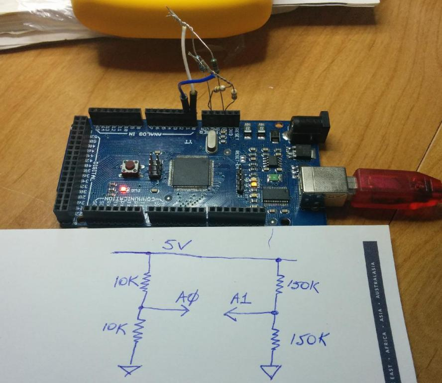

In another thread, dBC wrote:
Some Arduinos do have the AVR recommended inductor between AVCC and VCC. From memory I think the Leonardo might have it. A quick check of your ProMini reveals it doesn't, and nor do my Mega2560s. Here's a very simple check you could start off with. When I try this on my Mega2560 (powered from my desktop's USB port) I see:
Min: 510, Max: 511
Very occasionally Min drops down to 509, and that seems to happen more often on A1 (with the 150K divider) than on A0 (10K divider). You might need to reduce the size of the array depending on how much RAM your Arduino has. The array is only there so you can look at the signal should your rmin/max show something more exciting than 510/511, in which case you can paste the values into a spreadsheet and plot them.
Assuming yours also shows just 510/511 then you could start adding back in the components of your energy monitoring schematic, and see if/when that changes.

[EDIT-1] P.S. I used 1% resistors which would explain why both dividers have nailed the mid-point so well. If you don't have 1%'ers you might see a different value from 510/511, which doesn't matter. You're looking for stability rather than accuracy.
[EDIT-2] P.P.S. If I stick my finger on the mid-point of the divider, the readings go to 505/515 for the low impedance source (A0) and 490/531 for the high impedance source (A1).
...
The analogue ground is also separated from the digital ground to prevent 'ground noise' from getting into the ADC.
How does that work? Presumably they need to become one before they get to the AVR?
If I'm following the trail correctly, it looks like the emonTx V3 uses one of these:
http://www.ciseco.co.uk/downloads/documents/RFu%20-328%20v1.2.pdf
and it too skips the Atmel recommended low pass filter on AVCC.
I replied:
The V3 does use the RFμ328, but there's an inductor separating the digital ground from the analogue (clean) ground.
dBC wrote:
there's an inductor separating the digital ground from the analogue (clean) ground.
I'm having trouble getting my head around that. Given the ADC is referenced to the digital ground, won't you get the best results with the meanest, fattest, lowest impedance ground plane money can buy? Won't dividing up the ground planes and separating them with an inductor potentially turn what would have been common mode noise into real noise?
I replied:
Have a look at the PCB layout to see what's actually happened. The input end goes to AGND which is a ground plane beneath the analogue tracks and is linked to GND by L1. All I can say is in practice, the noise performance of the V3 seems to be better than the V2 though I haven't tried to make a definitive set of measurements, and both seem on anecdotal evidence to be better than a combination of Arduino and plug-board / prototype board.
dBC wrote:
I'm curious as to the purpose of that inductor, at first blush it seems to be the exact opposite of what you want between your ground planes. It also looks like the RFμ328 has a single GND pin as well, which I reckon would be another choke-point. You really want all those AVR GND pins connected straight into the GND plane.
Here's an excerpt from an AD tutorial on connecting ground planes:
The arrangement shown in Figure 4 illustrates that the two planes are kept separate all the way back to a common system "star" ground, generally located at the power supplies. The connections between the ground planes, the power supplies, and the "star" should be made up of multiple bus bars or wide copper braids for minimum resistance and inductance.
(http://www.analog.com/static/imported-files/tutorials/MT-031.pdf)
Re: Noise in the Arduino / emonTx front end
I believe Glyn did the layout of the V3, it certainly wasn't me. My input was only the power supply via the ac adapter, plus trying to cast a critical eye over the designs at various stages.
There are probably many good reasons for not keeping Vcc and AVcc separate (as Atmel have done) in the RFμ328, but I suspect low noise analogue measurements were not high up on the priority list.
Re: Noise in the Arduino / emonTx front end
I guess you could always drop a massive blob of solder right across L1 and see what it does to the zero current readings. A big blob of solder is still a ways from "multiple bus bars or wide copper braids", but closer to them than an inductor.
Re: Noise in the Arduino / emonTx front end
Hi guys,
In the name of continues improvement new emonTx V3.4 which we will be shipping in a few weeks the analog and digital ground planes have been joined under the MCU and the RFu328 has been replaced with a ATmega328 board layout.
More photos: https://plus.google.com/b/114424977493521882459/photos/114424977493521882459/albums/6087933868300678609
There is more info on the emonTx V3.4 and it's new features on the wiki (work in progress):
http://wiki.openenergymonitor.org/index.php?title=EmonTx_V3.4
Thanks a lot for your help and support.